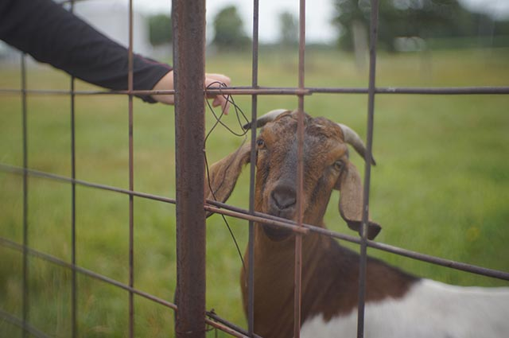
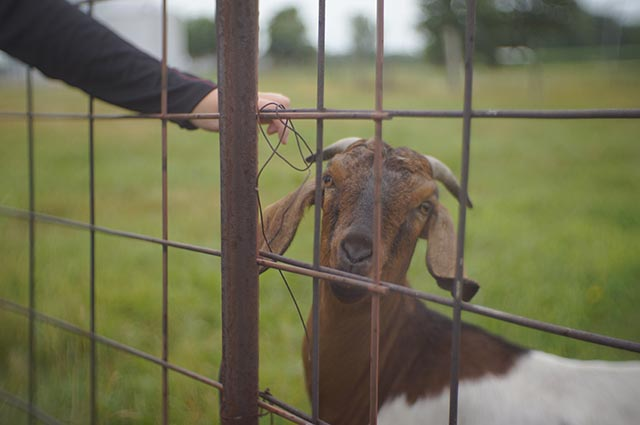

Experience
FILTER:
ALL
WORK
SCHOOL
OTHER
Now
Intro to Data Management Tutor
Indiana University-Purdue University Indianapolis
Tutoring for CIT214 - Intro to Data Management. This involvs interacting with students both in-person and online. I also provided tutoring for CIT215 Web Programming.
Spring Classes
Indiana University-Purdue University Indianapolis
| 3 |
CIT202 |
Networking Fundamentals |
| 3 |
CIT203 |
Information Security Fundamentals |
| 3 |
CIT213 |
Systems Analysis and Design |
| 3 |
NEWM-N450 |
Usability Principles for New Media Interfaces |
| 3 |
OLS371 |
Project Management |
| 1 |
TCM250 |
Career Planning in Engineering & Technology |
Technology Business Support
Indiana Farm Bureau Insurance
Following my summer internship at the company, I began a part-time position in the TBS department. At this position, we provide support to employees of the company and oversee the deployment of new equipment and software.
Fall Classes
Indiana University-Purdue University Indianapolis
| 3 |
CIT215 |
Web Programming (Javascript, PHP) |
| 3 |
CIT214 |
Intro to Data Management |
| 3 |
CIT207 |
Data Communications |
| 3 |
CGT116 |
Geometric Modeling/Visual Communication |
| 3 |
HER-E101 |
Beginning Drawing I |
| 3 |
OLS263 |
Ethical Decisions in Leadership |
Aug
Summer Classes
Indiana University-Purdue University Indianapolis
| 3 |
CIT176 |
Information Technology Architectures |
| 3 |
TECH300 |
Career Enrichment Internship |
Internship: QA Business Services
Indiana Farm Bureau Insurance
This internship focused a lot on the business aspect of software and testing to make sure that everything works they way that a user would expect. During this 11-week program, I worked primarily on testing for an invoice redesign project. I also created test plans for Windows 10 deployment, development of a new site, and future mobile device development. During the course of the internship, I and the 11 other interns were taken on several field trips to learn more about the insurance industry and interact with real customers. You can see photos below.
May
Teaching Assistant/Grader
Kumon Math and Reading Center
During the spring semester at IUPUI, I worked at Kumon of Brownsburg, a learning facility that specializes in Math and Reading. The business has a low-tech approach to learning, focusing on learning to think quickly rather than relying on technology. This was a great opportunity to experience working with children and a far better understanding the type of business that might resist technological change.
Mar
Lyrics/Video
The Net - Connection Pointe Christian Church
The Net is a young adults group that meets every other Sunday. I assist with set-up, create visual elements and loops, and manage the on-screen lyrics and notes during the service.
Spring Classes
Indiana University-Purdue University Indianapolis
| 3 |
CIT112 |
Information Technology Fundamentals |
| 3 |
CIT212 |
Web Site Design |
| 3 |
OLS252 |
Human Behavior in Organizations |
| 4 |
SPAN-S131 |
First-Year Spanish |
| 3 |
TCM320 |
Written Communication in Science and Industry |
2016
Graphics Editor
The Exponent
As Graphics Editor, I managed a team of roughly 10 artists. I was responsible for enuring that articles in the paper had proper visuals to accompany them. I worked against regular deadlines to oversee my team, create graphics for print, design page layouts, film coverage videos, and develop website assets. See some of my work under the "creations" portion of the website.

 
